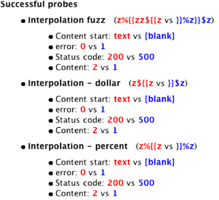

Sample results
To illustrate the types of findings the scanner provides and how to interpret them, I'll take a look at selected results from this experiment. It may help to think of Backslash Powered Scanner as less like a vulnerability scanner, and more like an eager assistant with limited technical understanding.
MySQL Injection
The following result came from a site that was vulnerable to SQL injection via the User-Agent header:
Basic fuzz (\z`z'z"\ vs \`z\'z\"\\)
Content: 5357 vs 5263
String - apostrophe (\zz'z vs z\\\'z)
Content: 5357 vs 5263
Concatenation: '|| (z||'z(z'z vs z(z'||'z)
Content: 5357 vs 5263
Basic function injection ('||abf(1)||' vs '||abs(1)||')
Content: 5281 vs 5263
MySQL injection ('||power(unix_timestanp(),0)||' vs '||power(unix_timestamp(),0)||')
Content: 5281 vs 5263
The scanner identified that the input was interesting, and correctly identified the exact vulnerability by injecting a function that only exists in MySQL. The 'Content: 5357 vs 5263' line is indicating the attribute the scanner used to distinguish the two results. In this case, the word count on the two responses is different. When this amount of evidence is displayed, the issue is extremely unlikely to be a false positive.
Filtered Code Injection
The following finding comes from a pentest of a site that had already been tested numerous times, and clearly shows the power of this scanner:
String - doublequoted (\zz" vs \")
error: 1 vs 0
Content: 9 vs 1
Tags: 3 vs 0
Concatenation: ". (z."z(z"z vs z(z"."z)
error: 1 vs 0
Content: 9 vs 1
Tags: 3 vs 0
Interpolation - dollar (z${{z vs }}$z)
error: 1 vs 0
Content: 9 vs 1
Tags: 3 vs 0
This was vulnerable to PHP code injection, but parenthesis were being filtered out by the application - it's the second of the three blind spots of classic scanners mentioned earlier. Because parenthesis are being filtered, the scanner has failed to inject a function, but we can execute arbitrary shell commands manually with a little effort.
I think the reason this vulnerability was missed by previous pentesters is that the injection was in the file path, which perhaps isn't somewhere a time-pressured tester would bother to manually check for code injection vulnerabilities. Why the application was calling eval() on the path remains a mystery. It's the kind of behaviour you expect from an internet of things device, not a household name website.
Old vulnerability
The following finding shows the current status of the input on sea.ebay.com that was previously vulnerable to PHP code injection (blind spot #3). We can clearly see that the application responds differently to any input containing the { character.

Note that the responses demonstrate a behaviour opposite to what a naive fuzzer might expect - the string intended to break the application ${{z causes a 200 OK response, whereas the harmless string causes a 500 Internal Server Error. Even though the search function is broken, the scanner has identified a clue of a vulnerability that used to be. Since the scanner is so efficient, it's perfectly plausible to try the PHP array-bypass attack on every input.
Regular Expression Injection
The scanner reported quite a few regex injection vulnerabilities, using both the input-transformation and diffing techniques. This is typically a low severity issue - it can be used to interfere with application logic and perhaps cause a denial of service (ReDoS) but little else. An exception is on servers running PHP<5.4.7, where regex injection can be escalated to arbitrary code execution by using a null byte to specify the 'e' flag. This technique was recently used to exploit phpMyAdmin, and I've verified that the scanner finds it. Regex injection is typically reported with the following fingerprint:
Diffing scanner:
Backslash (\ vs \\)
Transformation Scanner:
\0 => Truncated
\1 => Truncated
\$ => $
$ => $
Backreferences like \0 offer a simple way to recognise regex injection. Applications may treat \99 differently from \100, and expand lower groups like \0 or \1 to other strings:
GET /folder?q=foo\0bar HTTP/1.1
HTTP/1.1 301 Moved Permanently
Location: https://redacted.com/folder/?q=foohttp://redacted.com/folder/bar
Escaping flaws
The scanner noticed a cute but useless flaw in the way a popular web framework escapes values to be put into cookies:
foo"z: Set-Cookie: bci=1234; domain="foo\"z";
foo\: Set-Cookie: bci=1234; domain="foo\";
foo"z\: 500 Internal Server Error
This framework proved so popular that I added a followup probe to automatically classify this issue and prevent anyone wasting time on it:
Basic fuzz (\z`z'z"\ vs \`z\'z\"\\)
exception: 1 vs 0
Doublequote plus slash (z"z\ vs z\z)
exception: 1 vs 0
Semantic false positives
The function injection detection code raised a single false positive:
Function hijacking (sprintg vs sprintf)
<div: 13 vs 14
The root problem is evident from the URL: https://code.google.com/hosting/search?q=sprintg. The q input is being used to search a large codebase, where 'sprintf' is naturally a far more common term than 'sprintg'. Search functions are frequently ranked as interesting by the scanner, particularly those that support advanced syntax as they can appear deceptively similar to code injection vulnerabilities.
Web Application Firewall
Web Application Firewalls provide another source of 'interesting' behaviour. The scanner noticed that inline comments were being ignored on an otherwise value-sensitive input:
0/**z'*/ vs 0/*/*/z'*/
Manual investigation revealed that even HTML comments were being ignored... and also iframes.
0<!--foo--> vs 0<!--foo->
0<iframe> vs 0<zframe>
It looks like a Web Application Firewall (WAF) is rewriting input to remove comments and potentially harmful HTML. This is good to know - input rewriting effectively disables browsers' XSS filters. As ever, we can automate the HTML-comment followup to prevent this WAF from being a reoccurring distraction.
SOLR JSON Injection
The scanner flagged some interesting behaviour exhibited by a search function:
Basic fuzz (\z`z'z"\ vs \`z\'z\"\\)
Content: 1578 vs 1575
Backslash (\ vs \\)
Content: 1576 vs 1575
String - doublequoted (\zz" vs \")
Content: 1578 vs 1575
Manual testing revealed that the application was decoding unicode-escaped input too - searching for \u006d\u0069\u0072\u0072\u006f\u0072 returned the same results as searching for 'mirror'. It appeared that user input was being embedded into a JSON string without escaping, enabling us to break out of the search string and alter the query structure.
Lessons learned
These examples clearly show that the probe iteration process is crucial - it means that at a glance, we can distinguish a clearly critical issue from something that may take untold hours of investigation to classify. At present, search functions, WAFs and regex injections are a persistent source of promising looking behaviour that doesn't normally lead anywhere useful. Due to the flexibility of the probe-pair approach, almost every dud lead we encounter can be automatically classified in future with a followup probe.
We've also seen that the scanner can identify information that is useful even though it doesn't directly cause a vulnerability.
Many of these vulnerabilities were found on applications protected by WAFs - it appears that the simplicity of the payloads used makes them slip past WAFs unnoticed. However, I found that per-host rate limiting won't keep you off the radar of certain distributed firewall solutions that share IP-reputation scores; I managed to get the office IP banned from oracle.net without sending a single packet to it.